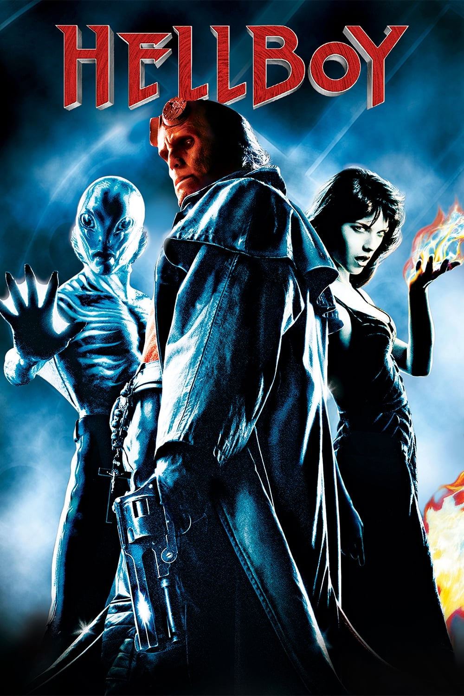

Мировая премьера: 2 апреля 2004
Слоган: Задать злу жару.
Сюжет: В 1944 году нацисты, потеряв надежду победить силой, прибегли к магии и вызвали в наш мир демона Исчадие. Краснокожий выходец из ада должен был помочь им сокрушить их врагов и установить на земле власть Зла, но чародеи из СС просчитались. Союзники выкрали юного демона и воспитали его защитником добра. Теперь Исчадие – агент Бюро исследований и защиты от сверхъестественных сил, могучий супергерой, сражающийся с порождениями Тьмы. При помощи пирокинетички Лиз Шерман, амфибии-телепата Эйба, каменной руки и убийственного чувства юмора он даёт отпор рвущимся в наш мир потусторонним тварям. Но настаёт день, когда оживает жуткий призрак прошлого Исчадия, и ему впервые придётся сразиться с противником, равным по мощи...
Режиссёр: Гильермо Дель Торо
В основе: Комиксы о Хеллбое (США, выходят с 1993, автор – Майк Миньола)
Серия: Хеллбой
В ролях: |
Рон Пёрлман | Исчадие |
| Руперт Эванс | Джон Майерс | |
| Джон Хёрт | Профессор Тревор "Брум" Бруттенхолм | |
| Сельма Блэр | Лиз Шерман | |
| Джеффри Тэмбор | Доктор Том Мэннинг | |
| Карел Роден | Григорий Распутин | |
| Даг Джонс | Абрахам "Эйб" Сапиен | |
| Кори Джонсон | Агент Клэй | |
| Кевин Трэйнор | Юный Брум |
Бюджет: $ 66 млн.
Кассовые сборы в США: $ 60 млн.
Кассовые сборы в мире: $ 99 млн.
Продолжительность: 1 ч. 54 мин.
Рейтинг: 6.9